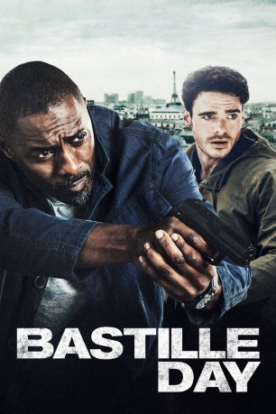
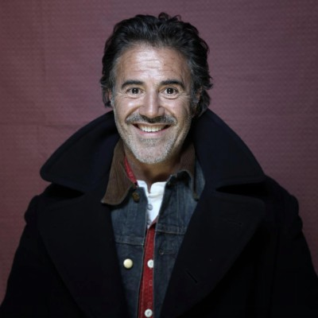
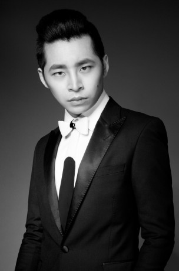

#7180 Bastille Day
Alternativ: Take, The
 
 IMDB-Wertung: 6.3 / 10
IMDB-Wertung: 6.3 / 10  Metascore: 0
Metascore: 0 
Der US-Amerikaner Michael Mason, der mithilfe gerissener Taschendiebstähle seinen Lebensunterhalt bestreitet, gerät nach einem Anschlag in Paris ins Visier der Geheimdienste. Der CIA-Agent Sean Briar wird auf ihn angesetzt, um ihn in die USA zu überführen. Aber Mason ist nicht nur unschuldig, er ist auch der Einzige, der die Spur zu den Attentätern zurückverfolgen kann...
Jahr: 2016
Dauer: 92 Minuten
FSK: 16
Land: England Studio: StudioCanalTonspuren: DTS - ,
Untertitel: Deutsch,
Auflösung: 1080p (1920x808) Größe: 4730 MB
Genre: Action, Thriller, Drama, Krimi
Regisseur: James Watkins
Drehbuch: Andrew Baldwin
Soundtrack:
Darsteller:
 Idris Elba als Sean Briar
Idris Elba als Sean Briar Richard Madden als Michael Mason
Richard Madden als Michael Mason Charlotte Le Bon als Zoe
Charlotte Le Bon als Zoe Kelly Reilly als Karen Dacre
Kelly Reilly als Karen Dacre-  José Garcia als Victor Gamieux
- Jérôme Gaspard als Yves
- James Cox als Pierre
- James Harris als Marcel
- Stéphane Caillard als Beatrice
- Anatol Yusef als Tom Luddy
 Eriq Ebouaney als Baba
Eriq Ebouaney als Baba- Zack Buell als Dell the Tech Guy
- Aksel Ustun als Peroxide Paul
- Ines Boughanmi als French Journalist , uncredited
- David Broughton als Journalist , uncredited
 Max Cavenham als French Riot Police Sergeant , uncredited
Max Cavenham als French Riot Police Sergeant , uncredited- Donald Chimombe als Rioter , uncredited
 Bern Collaço als CIA Agent , uncredited
Bern Collaço als CIA Agent , uncredited- Alex Delescu als Protester , uncredited
 Gary Douglas als Arresting Police Officer , uncredited
Gary Douglas als Arresting Police Officer , uncredited- Alexandra Doyle als Journalist , uncredited
- Shola Ebofin als Protestor , uncredited
 Karl Farrer als Journalist , uncredited
Karl Farrer als Journalist , uncredited- Dave Goshorn als Protestor , uncredited
- Michael Haydon als Journalist , uncredited
- Laura Hydari als Yellow Mask Protestor , uncredited
-  Yun Lai als Japanese Visitor , uncredited
 Jorge Leon Martinez als Rioter , uncredited
Jorge Leon Martinez als Rioter , uncredited- Sofiene Mamdi als Street Guy , uncredited
 Alex Martin als The agressive protester , uncredited
Alex Martin als The agressive protester , uncredited Anthony Milton als CRS Riot Police , uncredited
Anthony Milton als CRS Riot Police , uncredited- Stephen Parker als CIA Executive Officer , uncredited
- Jennifer Vila Perkins als (uncredited
- Valeria Ragonese als Protester , uncredited
 Daniel Stisen als Riot Police , uncredited
Daniel Stisen als Riot Police , uncredited- Tugba Tirpan als French Protestor , uncredited
- Nadia Townsend als Protester , uncredited
- Francesco Tribuzio als Protester , uncredited
 Daniel Westwood als Response Rapide Sniper , uncredited
Daniel Westwood als Response Rapide Sniper , uncredited- Thierry Godard als Rafi Bertrand
- Vincent Londez als Yannick Bertrand
- Arieh Worthalter als Jean
- Mohamed Makhtoumi als Christophe
- Théo Costa-Marini als Xavier
- Ismaël Sy Savané als Serge
- James Stewart als Henri
- Linda John-Pierre als Baba's Wife
- Jean-Marie Narainen als Oumar
- Alex Fondja als Ange
- Grégoire Bonnet als Paul Le Blanc
Datei: X:\2016(A-F)\Bastille Day (2016, FSK16, 1920x808).mkv seit 04.10.2017
Festplatte: HD 2016(A-Z)
 Es gibt insgesamt 147 Filme in der Gruppe '2016(A-F)'
Es gibt insgesamt 147 Filme in der Gruppe '2016(A-F)'